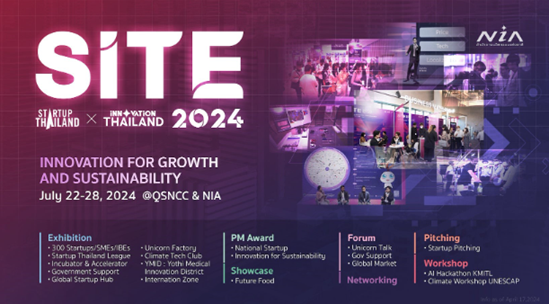

News & Insights
Stay up to date with the latest news, stories and insights about our company and products. Get informed on key developments and innovations shaping our journey.
News
10th Indonesia International Geothermal Convention & Exhibition (IIGCE), September 18-20, 2024
Our presentation entitled "Novel Accelerator of Geothermal Field Development Utilizing SQUID-TEM”.
SITE 2024 (Start-up x Innovation Thailand Expo),
July 22-24, 2024
Exhibited our technology and solution via NEDO Japan booth.
Publication
[1] "Development of physical exploration technology using TEM method
with high-temperature superconducting quantum magnetic sensor"
Tsunehiro Hato, XXVol, PP YY-ZZ, 2024, Society of Exploration Geophysics
[2] GCCSI Technologies Compendium - SUSTEC
Keiichi Tanabe, XXVol, PP YY-ZZ, 2024, GCCI.
[3] Technical Paper A
Keiichi Tanabe, XXVol, PP YY-ZZ, 2024.
[4] Technical Paper B
Keiichi Tanabe, XXVol, PP YY-ZZ, 2024.
[5] Technical Paper C
Keiichi Tanabe, XXVol, PP YY-ZZ, 2024.